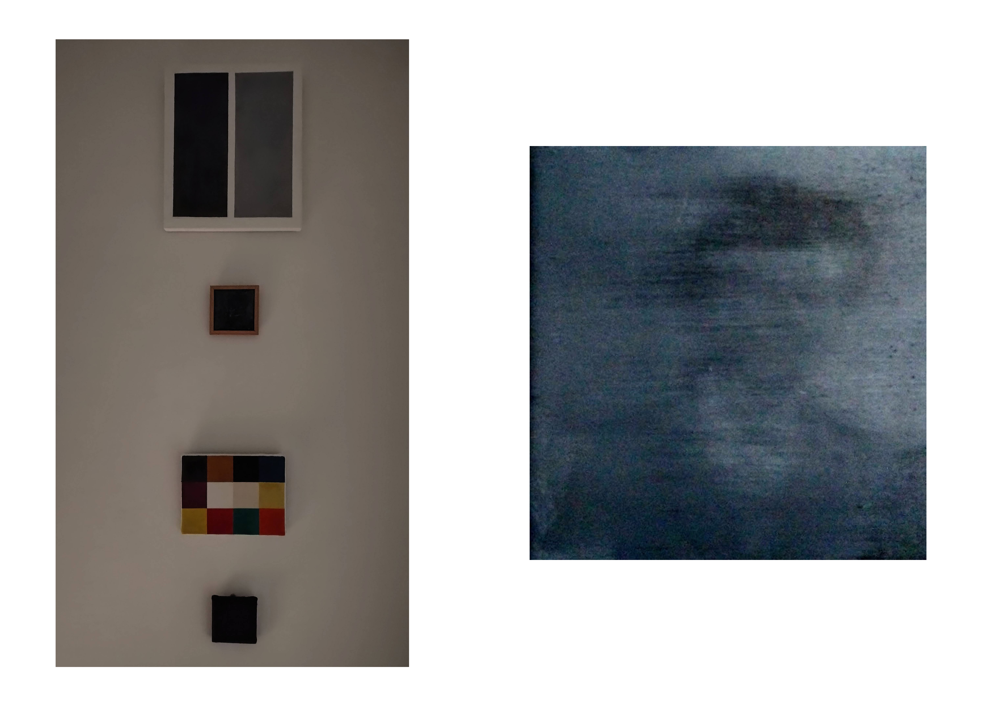

Grey. It makes no statement whatever; it evokes neither feelings nor associations: it is really neither visible nor invisible. Its inconspicuousness gives it the capacity to mediate, to make visible, in a positively illusionistic way, like a photograph. It has the capacity that no other colour has, to make 'nothing' visible.
Two greys juxtaposed